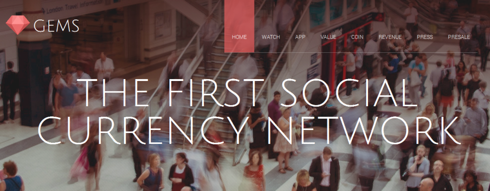

Tel Aviv, Israel – Gems, the messaging app, unveiled a secure network for encrypted chat that will use cryptocurrency for in-app purchases and allow users to send coins to each other on October 21.
Led by Daniel Peled, the Gems development team is excited to release its beta version ahead of its presale for the in-app token, gems, starting mid-November. The app will include a wallet for accepting cryptocurrency from any user across the network.
The announcement of the Gems app arrives just in time, amid growing concerns about privacy and database hacks. As “private information has been leaked, technology users have become much more concerned about the security of their data,” says Daniel Peled, Gems founder and CEO.
WhatsApp, for example, stores users’ communications, messages, pictures, and videos without encryption. In comparison, Gems stores no user data and maintains no way to access users’ messages, which keeps data truly private.
Gems is a social-messenger app that comes integrated with next-generation bitcoin technology, and offers a mixture of RSA 2048 and AES with 256-bit keys. Encryption is performed client to client, making secure messages indecipherable by the Gems infrastructure. This is the only real way to achieve 100% privacy because it does not entrust any third parties.
Social media companies such as Snapchat and Telegram have thrived by offering services that put a premium on security through the use of private messages. Gems takes it a step further and authenticates user identity through an encrypted passphrase. The app does not require users to enter a mobile number in order to communicate.
The in-app token for Gems is created by the Counterparty protocol and will be available starting November 15. Counterparty is a protocol that allows nodes to communicate using the bitcoin network. Users who participate in the beta release (and the lucky few who are invited) will be able to use gems tokens to unlock in-app features, including earning additional gems tokens by referring friends who then download the app.
To find out more about Gems messaging, check out www.getgems.org. And if you’re interested in getting your hands on gems tokens before your friends do, our friends at Koinify are facilitating the crowdsale. You can register directly via their website at www.koinify.com/
Here’s the link to the PRE ANN on Bitcoin talk: Link
At Cryptomen, we are excited about Gems because it is a unique application of bitcoin technologies for a better, safer, private way of communication.
And as always, Stay #turnt4cryptoz!
By Karan Shah
Tip the writers! 13VxRGh6tmn7pSZoi16XXTWtjA1zT1YrNe 13VxRGh6tmn7pSZoi16XXTWtjA1zT1YrNe Received this month: BTC 0.0264
CryptoFund will be traded with the following allocation:
75% | CryptoBot
25% | Manual Trading
About CryptoBot:
CryptoBot is our newest trading tool that will be unveiled during the trading period of CF01. CryptoBot (manually configured and monitored on a daily basis) will trade in two primary ways, continuously adjusting to market conditions:
Low Risk Configuration:BTC/USD/CAD/Altcoins
Our low-risk configuration automatically rebalances our portfolio with fiat currencies, Bitcoin and altcoins. This configuration is based upon the fundamental belief that in the long run the value of Bitcoin will continue to grow. The configuration rebalances, using the Shannon’s Demon strategy to capitalize on volatility in the market. For instance, if we believe Bitcoin is bullish, we will rebalance attributing a bigger proportion of our fund into Bitcoin, waiting for new opportunities in the market. Conversely, if we believe Bitcoin is stagnant (like what we see right now), we will hold an equivalent proportion of altcoins and Bitcoin, being more careful about the volatility in the market. On the other hand, if we believe Bitcoin is bearish, we will rebalance buying more altcoins or fiat currency like USD.
High Risk Configuration:Altcoins
Our high risk configuration rides the volatile pumps of the market, based on volume increase on a 6-hour time scale trend and our custom configurations. We have a trading team of 10 successful traders in the Bitcoin community. With our team, we have daily and weekly meetings to discuss our trading strategy and update the parameters of CryptoBot.
To do this, we create a white paper to list all the coins we believe will succeed based upon different attributes (development team, innovative features, etc.). We then rank each coin based upon their attribute scores and enter those coins into CryptoBot. Each meeting we re-evaluate our current coins in the system and evaluate new coins- making adjustments as necessary.
About Manual Trading:
Our manual trading strategy is involved with the riskier altcoins. It is here we speculate on coins that are not in CryptoBot, such as IPO’s and coins that don’t fit the parameters we have defined for CryptoBot. An example would be a coin that currently has a volume below our CryptoBot threshold, but we feel an upcoming development will have a significant impact on the price that we can take advantage of. These coins are all discussed in our trading group meetings and action is taken when gains seem probable. These coins are our highest risk for losses and are traded with a small percentage of the fund in accordance with our risk management strategy.
Risk management:
Our risk management strategy involves a fund percentage allocation of:
50% in rebalancing
25% in high risk altcoins
25% in manual trading.
This allocation allows us to limit potential losses, but will enable us to capitalize on opportunities as they arrive. Our rebalancing parameters are highly dependent upon our coin ranking system that is conducted in our trading meetings.
The Cryptomen Team will publish the whitepaper shortly. We will keep you updated here.
To register for CryptoFund, visit this link: CryptoFund
Read our ANN on Bitcoin Talk here and an article about CryptoFund on cryptocoin news here! UPDATE: As of 10/27, we have raised 34.2 BTC! UPDATE 2: You can download the white paper here
And as always, Stay #turnt4cryptoz!
Disclaimer:
This is not a stock mutual fund. We can not tell you we will invest 25% of the fund in blue chips, 25% in metals, 25% in technology and 25% in bonds and we cannot guarantee a specific ROI. What we can tell you is that we are constantly diversifying and rebalancing our portfolio with the movements in the market and we have an established trading strategy with some of the best traders in the industry. We are very confident that we will be successful. But even with these systems in place, this market can be extremely volatile and unpredictable (hacks, FUD, etc.), and losses can be incurred. Please, invest no more than you are willing to lose.
By Karan Shah
Tip the writers! 13VxRGh6tmn7pSZoi16XXTWtjA1zT1YrNe 13VxRGh6tmn7pSZoi16XXTWtjA1zT1YrNe Received this month: BTC 0.0264
Most of you would not have heard of Braintree(well at least till today). Braintree is a company that helps online business process credit card payments. Well, how does such a company end up on our blog? Well, today Paypal, which acquired braintree around this time last year, released a video that gives us a glimpse of the future. It’s a bright future, especially because it is a future where Bitcoins are easily accessible and used by merchants all around the world and supported by money processing services like Paypal.
More about Braintree: Braintree was founded in 2007 by Bryan Johnson, a serial entrepreneur. After very successful funding rounds in 2011, Braintree launched a slew of services that made transactions much easier. It acquired Venmo in 2012 for $26.2 million. This budding company had another round of funding in 2012. By September 2013, the company was processing $12 billion annually, with 4$ billion on mobile. Later that month, Paypal acquired Braintree for $800 million.
What this means to you and me: How many times have you knowingly or unknowingly used paypal last week? I am pretty sure you have used it more than once. Now imagine Bitcoins being used instead of dollar! Billions of everyday transaction with Bitcoins! That’s a not-so-distant dream. Also, the wide usage paypal and Braintree apis mean that Bitcoin will be everywhere. It will give a huge boost to the Bitcoin economy and make Bitcoin a prominent form of currency. It will also make tasks such as transferring money way easier. Also, for us traders, this means the value of Bitcoins will only rise!
Here’s the speech from the video:
“We Are The People,
who have built a whole new place to live, dream and be.
We employ ourselves, and vote with our money.
Our phone is our wallet.
We can spend Bitcoin with a tap, without a pocket
We can buy and sell and rent and send
And lend a twenty to a friend
from the coffee bar and share-car, We Are
unstoppable, with our thumbs.
Just One Touch to buy just about anything.
No need for filling billing info time-after-time
or remember password rhymes
to get that dress, a cabin, a concert ticket.
We live on all devices, and are as mobile as nature intended.
No need to send any details or data,
Not even when we pay each other.
We have magical money, not bound by bank or bill
It’s instant, simple, and secure enough,
to get out of the way.
Consider yourself invited to ‘The People Economy'”


{kind=link}